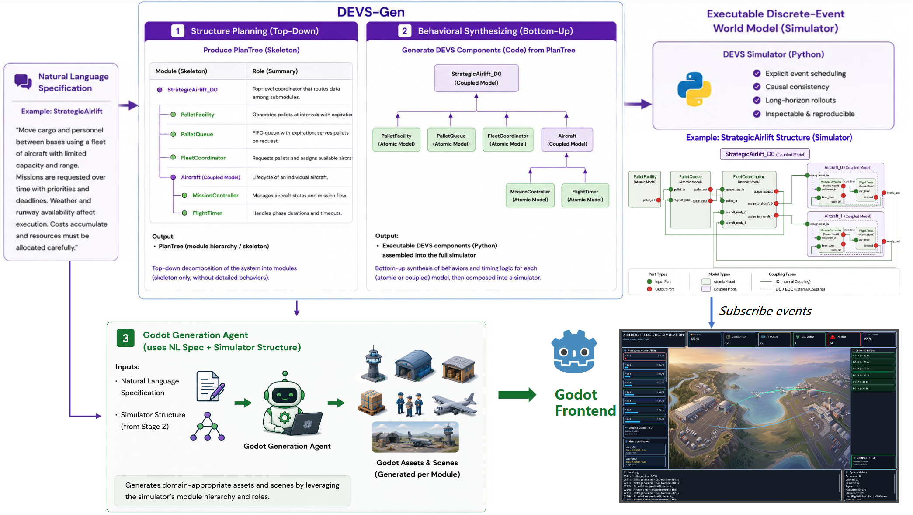
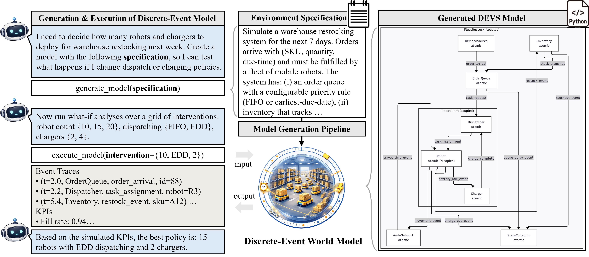
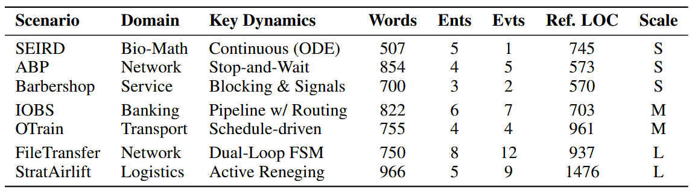
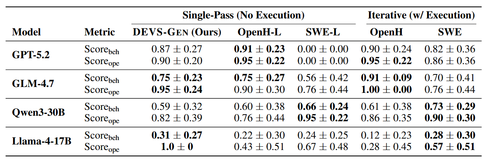
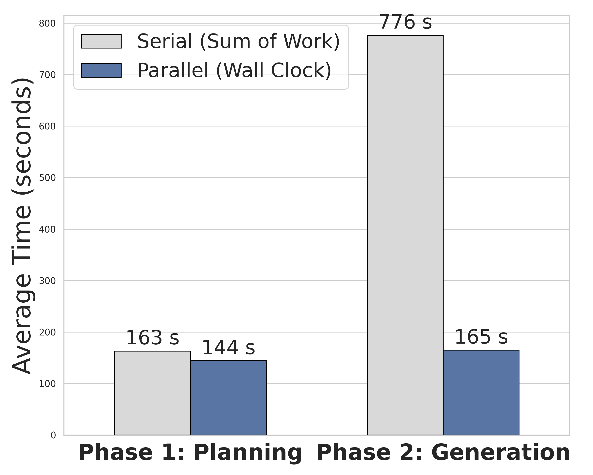
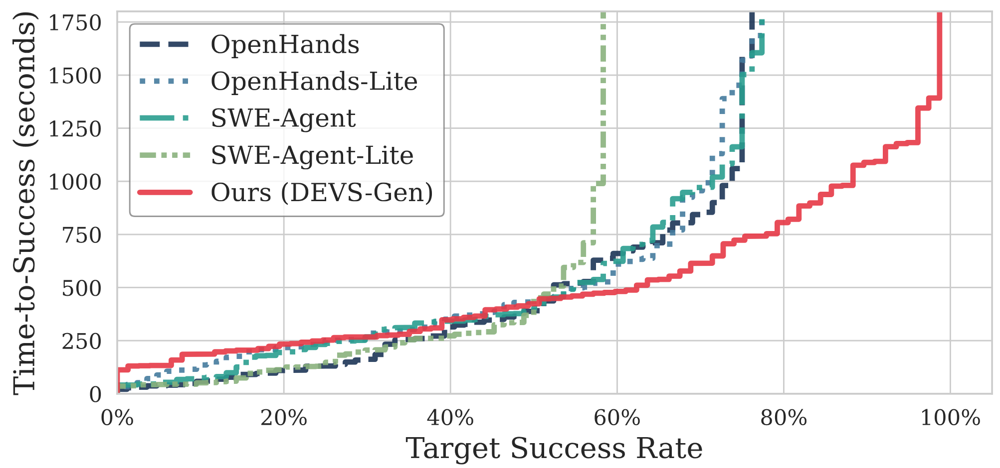

Text to Simulator
Infer a modular simulator with explicit components and interfaces from natural-language requirements instead of relying on free-form rollouts.
A discrete-event world-model stack for queues, deadlines, logistics, and other non-physical domains
DEVS-Gen turns a natural-language process description into an executable simulator in the DEVS formalism, where system state changes through explicit events such as arrivals, dispatches, delays, and handoffs. The same simulator can then be checked against the specification, reused for what-if planning, and streamed into an interactive frontend.
If you are new to the paper, this page is organized to be read top-down: first the problem setting, then the generation pipeline, then one complete benchmark walkthrough, then planning case studies, and finally the benchmark results and code entry points.
Infer a modular simulator with explicit components and interfaces from natural-language requirements instead of relying on free-form rollouts.
Evaluate generated simulators by checking their emitted event logs against executable operational and behavioral requirements.
Reuse the same simulator for what-if analysis, case-study walkthroughs, and frontend animation driven by the live trace stream.
A world model is an executable description of how an environment evolves and how actions change later outcomes. In many high-value domains, that evolution is driven not by continuous physics but by discrete events: arrivals, service delays, resource contention, deadlines, and causal handoffs.
Logistics pipelines, hospital operations, business processes, and lab workflows all fall into that regime. They need models that answer questions such as what happens next, what fails under delay, and which intervention is actually better once timing and coordination constraints are enforced.
DEVS-Gen targets this setting with DEVS, a modular simulator formalism built around components, ports, and event-triggered transitions. The framework first decides the simulator structure, then fills in component behavior, and finally evaluates the result through observable traces. That makes the output both a benchmarkable research artifact and a practical world model for downstream decision support.
Queueing, scheduling, maintenance, and coordination tasks where event order, waiting time, and resource conflicts determine the outcome.
Explicit components, ports, and transition logic make the generated simulator inspectable, executable, and easier to diagnose than black-box rollouts.
The rest of the page walks through one end-to-end benchmark, two planning examples, the main experimental results, and the code entry points needed to reproduce the workflow.
DEVS-Gen is a staged pipeline. It first decides what modules the simulator should contain and how they communicate, then writes the behavior of each module under those interface constraints, and finally evaluates or reuses the resulting simulator through its event stream. The Strategic Airlift case below illustrates those stages end to end.

The pipeline fixes structure before behavior generation, producing an executable simulator that can be benchmarked, inspected, and connected directly to a visualization frontend.
Build a structural plan, called a PlanTree, that fixes the module decomposition, port interfaces, and coupling graph before any DEVS code is written.
Generate the logic of atomic and coupled models under those contracts, then assemble the full executable simulator bottom-up.
Run trace-based checkers on the simulator and expose the same event stream to benchmarks, interventions, and live visualization.
Strategic Airlift instantiates the full workflow: a benchmark specification goes in, an executable simulator comes out, checker scripts score the emitted traces, and a frontend animation listens to those same backend events.
Strategic Airlift demo: the Godot frontend reacts directly to event traces emitted by the generated simulator in real time.
The benchmark above shows whether the generated simulator is faithful to the specification. This section shows the downstream use case: once the simulator exists, an agent can compare candidate interventions by simulation before committing to a recommendation.

The generated simulator becomes a reusable tool inside the decision loop: propose interventions, run them, inspect traces and KPIs, then choose the action supported by execution evidence.
In the ICU case, direct reasoning selects Plan 2. The model-assisted workflow simulates the candidate plans under a shared transition model and instead selects Plan 3.
Selected from text-only reasoning.
Scores from execution: Plan 1 = -35, Plan 2 = -5, Plan 3 = 15.
In the wet-lab case, direct reasoning selects Strategy C. The DEVS-assisted workflow evaluates all candidates under one shared simulator and instead selects Strategy B.
Not selected after executable evaluation.
Composite scores: A = 21, B = 23, C = 22.
After the case-study walkthroughs, the experiments answer two broader questions: how often does DEVS-Gen produce runnable simulators, and how often do those simulators behave correctly according to specification-derived checkers?

The benchmark spans seven scenarios across networking, service operations, banking, transport, logistics, and bio-math dynamics, from compact protocols like ABP to large logistics problems like Strategic Airlift.
The simulator must run successfully, obey the input-output contract, and emit valid JSONL traces in the required schema.
Checker scripts validate both local state evolution and larger causal timing patterns against the specification.

DEVS-Gen stays competitive with fully iterative software agents while operating as a structured single-pass generation pipeline.

In the ablation study, parallel synthesis yields about a 4.7x wall-clock speedup for component generation.

Time-to-success highlights the efficiency gap: iterative baselines often stall in debugging loops before reaching high success rates, whereas DEVS-Gen continues to accumulate solved tasks over time.
The open-source release builds on the HAMLET stack and ships with the benchmark suite used in the paper. If you want to reproduce the main workflow, there are two entry points: devs_app.run for direct model generation and devs_tester for benchmark-style generation and evaluation.
Install the repository, create the Conda environment, and populate the API credentials used by the generator.
git clone https://github.com/czyarl/devs_gen_code.git
cd devs_gen_code
conda create -n hamlet_env python=3.10 -y
conda activate hamlet_env
pip install -r requirements.txt
cp .env.example .env
# Fill in at least one model API key plus the search/scraping keys referenced in the repo README.The direct generation entry point takes a benchmark specification package and produces a simulator. The example below runs the generator on the Alternating Bit Protocol benchmark.
python -m devs_app.run \
--mode generate \
--debug_args_file benchmark/ABP/ABP_D1.yaml \
--concur_num 4If you want to inspect the system interactively instead, launch the Gradio interface with python -m devs_app.run.
The experiment harness in devs_tester reproduces the generation and evaluation workflow used for the paper benchmarks.
cd devs_tester
python gen_runner.py --list-frameworks
python gen_runner.py --list-benchmarks
python gen_runner.py \
--framework devs_fast_plan \
--model openai/qwen3.6-plus \
--benchmark ABP \
--workspace /path/to/ws
python eval_runner.py \
--benchmark ABP \
--sim_cwd /path/to/generated/project \
--sim_script run.py \
--workspace /path/to/resultsFor the full reproduction setup, including baseline agents, benchmark assets, and experiment configuration, see the GitHub repository linked above.